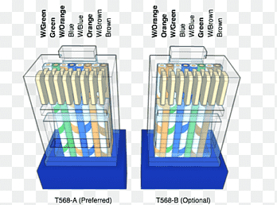

Fluxogramas de Algoritmos
Abaixo estão os fluxogramas que ilustram algoritmos utilizados na nossa instituição.
1. Elementos, Componentes e Configuração de Rede Interna
O servidor web está inserido em uma rede configurada com switches, roteadores, e servidores DNS, HTTP e DHCP. A configuração é feita no Cisco Packet Tracer para simular o ambiente de rede.
2. Configuração dos Servidores
- Servidor DNS: Responsável por traduzir nomes de domínio em endereços IP.
- Servidor HTTP: Gerencia a comunicação e entrega de páginas da web.
- Servidor DHCP: Fornece automaticamente endereços IP aos dispositivos na rede.
3. Equipamentos Aplicados em Redes
- Switch: Interconecta dispositivos em uma LAN, encaminhando os pacotes com base nos endereços MAC.
- Roteador: Conecta diferentes redes e encaminha pacotes com base nos endereços IP.
- Servidores: Realizam funções específicas como DNS, HTTP e DHCP.
4. Conceitos Importantes
- Conceito de Servidor: Um servidor é um dispositivo ou software que fornece serviços a outros dispositivos na rede.
- DNS: Sistema que traduz nomes de domínio para endereços IP.
- HTTP: Protocolo usado para transferência de informações na web.
- DHCP: Protocolo usado para fornecer endereços IP automaticamente aos dispositivos.
5. Foto da Crimpagem
Aqui um vídeo de uma crimpagem que realizamos em aula:
6. Cabo de Rede - Pinagem
A pinagem do cabo de rede segue os padrões T568A ou T568B. Cada padrão define a ordem dos fios dentro do conector RJ45.
7. Modelo OSI
O modelo OSI divide a comunicação em 7 camadas: Física, Enlace, Rede, Transporte, Sessão, Apresentação e Aplicação.
8. Modelo TCP/IP
O modelo TCP/IP possui 4 camadas: Acesso à Rede, Internet, Transporte e Aplicação. É o padrão utilizado na Internet.